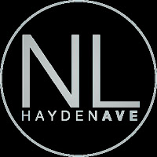

I Collect Churches
bible
Armchair Theology
Church Notes
So I have a confession…
I have a strange hobby. Some people collect toys, cars, stamps. Some people visit museums, zoos, arboretums.|
 |
| New Life Church, in Rathdrum Idaho |
{kind=link}
I… collect church experiences.
I visit churches and collect insights on the differences between them, leadership styles, music styles, facility choices, and the overall experience. I collect pastoral teaching and teaching styles. I collect theology and theological differences.
Some of that is true. But really, I somewhat accidentally turned studying church into a hobby. Maybe it’s because I was a pastor’s kid and saw some of the inside workings from a unique perspective. Maybe it’s because I secretly, and not so secretly, feel I am supposed to be a pastor but I’m still trying desperately to be anything else.
Maybe it’s because Church, theology, and teachings have let me down and disappointed me and I’m not ready to commit to any one thing, place, or person/pastor?
I’m not sure.
Maybe it’s all those things, none of them, something else plus those and more?
This morning, I visited New Life Church, in Rathdrum Idaho.
On balance, it was one of my better over-all experiences. The outside of the facility makes me feel like I’m walking back in time to something from my youth (not necessarily a good thing). However, once inside I found a nicely remodeled entry with a coffee shop.I was greeted warmly, by several people. However, I think they got the hint from my posture that I was uncomfortable so they eventually, thankfully, gave me my space. One thing I cannot abide is being pulled into a conversation I don’t want to have.
The soundboard was on display at the back (which is the entrance) and I almost went to check it out, but I’m a first time visitor, they have things to do and don’t need the distraction, so I found a seat with the family.
The carpet, walls, and seats need a facelift, but they were functional. I’d listened to the Elijah message before coming, so I knew that the pastor left WAY too many seats put out on purpose, contrary to popular church growth teaching, because he wants a vision of the future to get into everyone’s head. I liked that idea.
Funny thing is, I saw why church growth teachers tell you to do that. There were about 600 seats but only about 200 people. They actually did fill out all over the sanctuary so that no row or even section was full but every section had some people. I guess that’s why they rope off sections in other churches, pushing people forward. Still, knowing ahead of time that it was his vision, I liked it. The absence of people didn’t detract from the experience for me. I don’t know if it’s because I knew the vision ahead of time or not though.
I took some notes. The message was titled: DAD (Dedicated Against Destruction)
Lesson: He learned from his father, also a pastor, that when change needs to happen you need to Cut deep enough that you only cut once! That includes when you change an organization as a new leader when you make changes to your health when you decide to change a habit or even a sin. Leave no room for error and don’t make such a small cut that you have to keep going back over and over cutting, again and again, bleeding to death. Just cut deep enough that the problem is gone and you can start healing.When we need to change, either to let bad stuff go or just to let good stuff go that’s distracting us from better… Do we let the Holy Spirit cut deep enough?
Lesson: Destruction comes from false witnesses.
“Beware of false prophets, who come to you in sheep’s clothing, but inwardly they are ravenous wolves. You will know them by their fruits. Do men gather grapes from thornbushes or figs from thistles? Even so, every good tree bears good fruit, but a bad tree bears bad fruit. A good tree cannot bear bad fruit, nor can a bad tree bear good fruit. Every tree that does not bear good fruit is cut down and thrown into the fire. Matthew 7:15-19 NKJV
What does it mean to be a False Prophet, and could you be one without knowing it?
False prophets are godly talk with worldly actions.You need to be careful what voices you listen to and listen for… that includes inside your own head. Stop listening for someone else… On behalf of someone else… Or for another voice.
Don’t substitute godly things for good things. You may “want” something, but is that thing you want or enjoy keeping you from something far greater?
Lesson: You don’t get healed by comparing the size of your wound to another’s. Instead of looking at what other’s have, feeling either jealousy or sorrow, look at what you have and be grateful. Instead of looking at other’s failures and saying “at least I’m not that bad”, look at your own wounds and let God heal them so you can move on to greater things.
The pastor brought his own son up to the platform and read from the book: Good Good Father for Little Ones (Affiliate Link); by Chris Tomlin (Author), Pat Barrett (Author).
Lesson: The only gift you can bring God is YOURSELF... he doesn’t want your sacrifice, praise, Bible reading, or other “Christian tasks”… he wants YOU. Then, out of that flows those other things.
Thanks for reading… If you’re ever in the North Idaho area, you should visit.
*New Life Church
Address: 7011, 6068 W Hayden Ave, Rathdrum, ID 83858
Phone: (208) 687-3606